Produção e distribuição de energia elétrica apartir do sistema de geração de energia, sobre a nova Resolução Normativa nº 482/2012 que criou o Sistema de Compensação de Energia Elétrica, permitindo que o consumidor instale pequenos geradores (tais como painéis solares fotovoltaicos e microturbinas eólicas, entre outros) em sua unidade consumidora e troque energia com a distribuidora local com objetivo de reduzir o valor da sua fatura de energia elétrica, será permitido o uso de qualquer fonte renovável, além da cogeração qualificada, denominando-se microgeração distribuída a central geradora com potência instalada até 75 quilowatts (KW) e minigeração distribuída aquela com potência acima de 75 kW e menor ou igual a 5 MW (sendo 3 MW para a fonte hídrica), conectadas na rede de distribuição por meio de instalações de unidades consumidoras. Quando a quantidade de energia gerada em determinado mês for superior à energia consumida naquele período, o consumidor fica com créditos que podem ser utilizados para diminuir a fatura dos meses seguintes.
De acordo com as novas regras, o prazo de validade dos créditos passou de 36 para 60 meses, sendo que eles podem também ser usados para abater o consumo de unidades consumidoras do mesmo titular situadas em outro local, desde que na área de atendimento de uma mesma distribuidora. Esse tipo de utilização dos créditos foi denominado “autoconsumo remoto”, Outra inovação da norma diz respeito à possibilidade de instalação de geração distribuída em condomínios (empreendimentos de múltiplas unidades consumidoras). A ANEEL criou ainda a figura da “geração compartilhada”, possibilitando que diversos interessados se unam em uma cooperativa, instalem uma micro ou minigeração distribuída e utilizem a energia gerada para redução das faturas dos cooperados. Com relação aos procedimentos necessários para se conectar a micro ou minigeração distribuída à rede da distribuidora, a ANEEL estabeleceu regras que simplificam o processo. O próprio cooperado das entes cooperativas na incorporação, pode gerar sua própria energia elétrica a partir de fontes renováveis e inclusive fornecer o excedente para a rede de distribuição de sua localidade. Trata-se da micro e da minigeração distribuídas de energia elétrica, inovações que podem aliar economia financeira, consciência sócio ambiental e autossustentabilidade. Juntamente e De acordo com a Resolução Normativa nº 482/2012, os microgeradores são aqueles com potência instalada menor ou igual a 100 quilowatts (kW), e os minigeradores, aqueles cujas centrais geradoras possuem de 101 kW a 1 megawatt (MW). As fontes de geração precisam ser renováveis ou com elevada eficiência energética, isto é, com base em energia hidráulica, solar, eólica, biomassa ou cogeração qualificada.
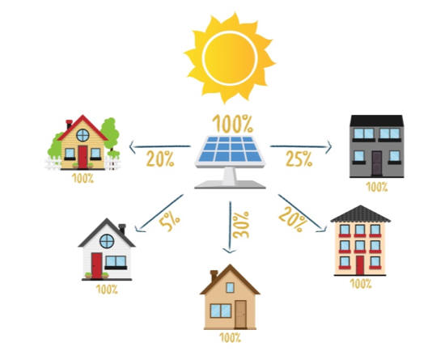
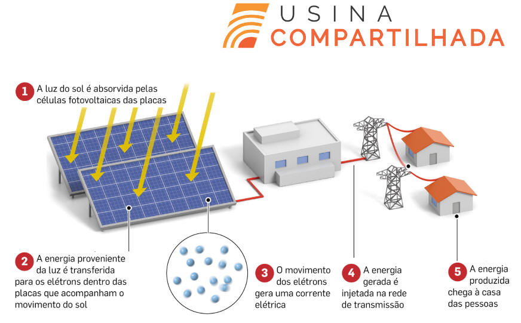
Crédito de Energia
Simplificar a conexão das pequenas centrais à rede das distribuidoras de energia elétrica e permitir que a energia excedente produzida possa ser repassada para a rede, gerando um “crédito de energia” que será posteriormente utilizado para abater seu consumo. Um exemplo é o da microgeração por fonte solar fotovoltaica: de dia, a “sobra” da energia gerada pela central é passada para a rede; à noite, a rede devolve a energia para a unidade consumidora e supre necessidades adicionais. Portanto, a rede funciona como uma bateria, armazenando o excedente até o momento em que a unidade consumidora necessite de energia proveniente da distribuidora.
O saldo positivo desse crédito de energia não pode ser revertido em dinheiro, mas pode ser utilizado para abater o consumo em outro posto tarifário (ponta/fora ponta), quando aplicável, em outra unidade consumidora (desde que as duas unidades estejam na mesma área de concessão e sejam do mesmo titular) ou na fatura do mês subsequente. Os créditos de energia gerados continuam válidos por 36 meses.
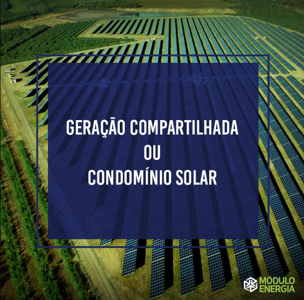
Condições para a Adesão
Compete a Cooperativa (COPARCE) e os Cooperados ter a iniciativa de instalação de micro ou minigeração distribuída – a ANEEL não estabelece o custo dos geradores e tampouco eventuais condições de financiamento. Portanto, o cooperado deve analisar a relação custo/benefício para instalação dos geradores, com base em diversas variáveis: tipo da fonte de energia (painéis solares, turbinas eólicas, geradores a biomassa, etc), tecnologia dos equipamentos, porte da unidade consumidora e da central geradora, localização (rural ou urbana), valor da tarifa à qual a unidade consumidora está submetida, condições de pagamento/financiamento do projeto e existência de outras unidades consumidoras que possam usufruir dos créditos do sistema de compensação de energia elétrica.
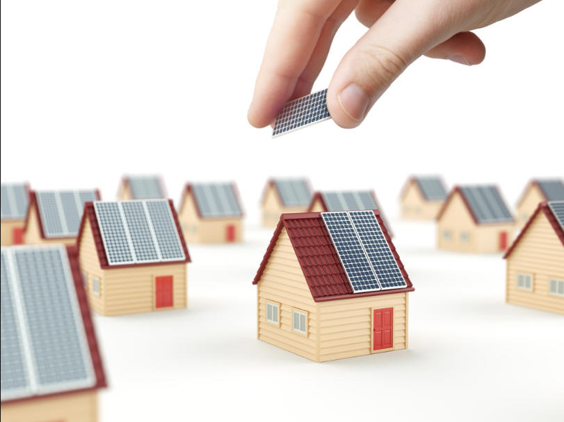
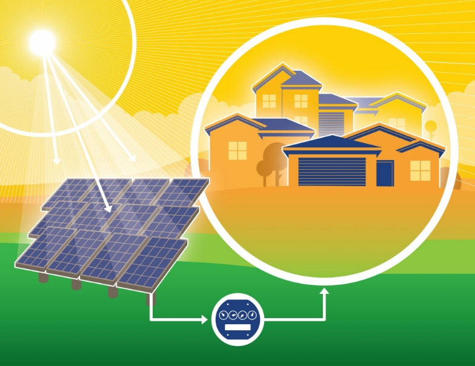
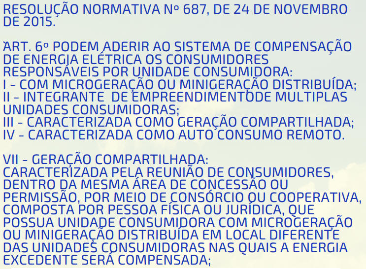
GERAÇÃO DE ENERGIA COMPARTILHADA ENTRE ENTES COOPERADOS
A geração compartilhada apartir da Cooperativa (COPARCE) é uma das modalidades do Sistema de Compensação de Energia Elétrica, criado pela Resolução 482, de abril de 2012, editada pela ANEEL (Agência Nacional de Energia Elétrica), e posteriormente atualizada pela Res. 687/ 2015. Na geração compartilhada, um grupo de cooperados reunidos em cooperativa (pessoa física) ou consórcio (pessoa jurídica) dividem entre si os créditos de energia gerados por uma usina de micro ou minigeração
Para mudar essa realidade, desde 2012 o brasileiro já pode gerar sua própria energia e receber descontos em sua conta de luz. geração compartilhada, possível desde março de 2016, aliada à plataforma da Cooperativa vieram para mudar essa realidade e garantir que todos tenham acesso às energias limpas, renováveis e, ainda por cima, economizem em sua conta de luz.
O que e um credito de energia limpa ?
Quando uma usina de micro ou minigeração da Cooperativa e injeta energia na rede elétrica, essa energia se transforma em crédito, que pode ser abatido ou no local em que houve a geração (caso haja consumo) ou em outro local. Na geração compartilhada pela cooperativa, esses créditos (provenientes de uma fonte de energia limpa) são descontados diretamente da conta de luz de cada consumidor integrante da cooperativa.
Porque eu tenho que participar de uma cooperativa ?
A Resolução 687/2015 da ANEEL faz tal exigência para que os créditos possam ser distribuídos entre todos os consumidores, na modalidade de geração compartilhada.
O que e necessário para fazer parte do modelo da Cooperativa Compartilhada de energia Limpa?
Você precisa:
- Possuir uma conta de luz em seu nome e ter um cartão de crédito que possa usar;
- Preencher o cadastro na cooperativa ;
- Ler e concordar com o estatuto da cooperativa e integralizar uma cota-parte.
- Alugar um percentual de uma usina de micro ou minigeração.
Sendo Cooperado , a que tenho direito ?
Sendo cooperado, mediante disponibilidade de capacidade de geração, você terá a opção de alugar um percentual de uma usina de geração de energia renovável e, desta forma, receber os créditos referentes à geração de energia deste percentual da usina. O valor desta locação será dimensionado para que o consumidor receba um desconto em sua conta de luz maior do que o valor de sua mensalidade e para que, ao decorrer do ano, ele tenha uma boa economia em seus gastos com a conta de luz.
De quanto sera o desconto em minha conta de luz ?
No Brasil, cada concessionária de distribuição de energia possui tarifas distintas. Por causa disso, o desconto que você vai receber em sua conta de luz vai variar de acordo com o local em que você mora e com a expectativa de geração anual de energia da usina. Estimamos que, em geral, os créditos adquiridos serão entre 10 a 90% mais baratos que os da concessionária de energia. No entanto é importante lembrar que você pagará um valor fixo para a Cooperativa, então se o sistema performar melhor do que o esperado, isso significa mais economia para cooperado.
Me Tornando Cooperado já começo a ter economia imediatamente?
Mas há prazos regulamentares que precisam ser seguidos, Primeiro, cooperado entrará em uma lista de espera e será informado assim que for disponibilizada uma nova quota de locação da usina. Quando isso acontecer, vamos te convidar a assinar um contrato de locação do percentual que cooperado tiver interesse. A partir daí, enviamos seus dados para a distribuidora de energia e, após processamento no sistema deles, o cooperado começará a receber os descontos na sua conta de luz.Mas não precisa ficar preocupado: até que isso ocorra, o único valor a ser pago pelo cooperado será o da integralização da quota-parte na cooperativa.
Assinando o contrato com a cooperativa eu serei dono da usina de geração ?
Não, o cooperado assinará um contrato de locação de um percentual da usina que te gerará créditos de energia que serão convertidos em desconto em sua conta de luz.
O cooperado vai precisar vir a minha casa? Vou ter que fazer obras?
Não, A combinação da geração compartilhada com o modelo da Cooperativa e Compartilhada permite que cooperado tenha economia na conta de luz com alguns cliques, sem necessidade de obras em seu imóvel. Após seguir os passos elencados acima, a cooperativa cuidara de tudo junto com a distribuidora de energia.
Vou continuar sendo cliente da minha concessionaria de energia ?
Sim, o cooperado continuará sendo cliente de sua concessionária, que continuará fornecendo a energia que você consome. Os créditos de energia limpa da Cooperativa, vão ser abatidos da sua conta de luz, ajudando a suprir parte da demanda que a concessionária tem e a reduzir, por exemplo, a necessidade por energia poluente de usinas termelétricas a carvão e petróleo que são muito acionadas em períodos de estiagem. Aqui é importante ter em mente que, independente de quantos créditos de energia o cooperado adquira conosco, sempre terá que pagar, pelo menos, o custo de disponibilidade cobrado em sua conta de luz - que é a taxa mínima exigida pela concessionária.
O que acontece se eu me mudar para outro imóvel?
Aqui há duas possibilidades:
- Se você se mudar para um outro imóvel, mas ainda for atendido pela mesma concessionária, os créditos de energia podem passar a ser descontados de sua nova conta de luz. Basta, para isso, informar à concessionária o número da instalação do novo imóvel. Mas é preciso atenção: como as distribuidoras de energia têm 60 dias para processar a mudança, quanto antes você nos avisar, mais rápido voltará a usufruir dos seus créditos!
- Agora, se a sua nova residência for atendida por outra concessionária, infelizmente o seu contrato dos créditos de energia terá que ser encerrado! Essa é uma limitação imposta pela Res. 482 da ANEEL e não pelo nosso modelo. Mas, caso ainda tenha interesse em continuar conosco, nos mande um e-mail! Quem sabe já não teremos outra microusina pronta para te atender?
Como conseguirei acompanhar a evolução dos meus créditos ?
Ao se tornar um cooperado, o cooperado receberá um login para acesso à sua página exclusiva em nosso site. Lá o cooperado encontrará as informações sobre seus créditos, dados de faturamento, bem como terá acesso a indicadores que mostram como a sua escolha está ajudando o meio ambiente e a sociedade.
Porque escolher Cooperativa de Consumo ?
Porque nós te permitimos economizar na conta de luz e ainda ajudar a sociedade e o meio ambiente com a praticidade de alguns cliques.O nosso modelo permite que o cooperado tenha acesso a uma energia limpa e sustentável, sem ter que realizar nenhum investimento inicial ou se preocupar com nenhum tipo de manutenção. Somos uma start-up 100% nacional, fruto do trabalho, inspiração e sonho de jovens que querem transformar a realidade brasileira.
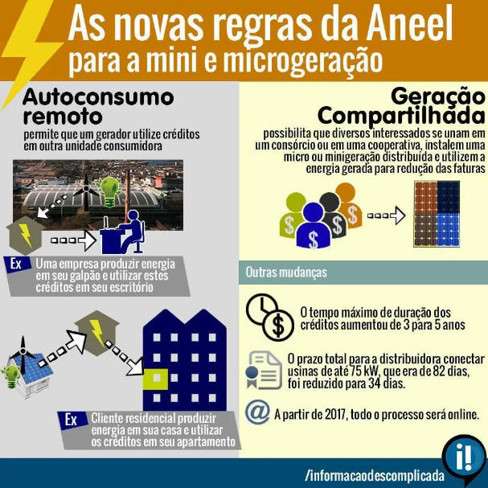
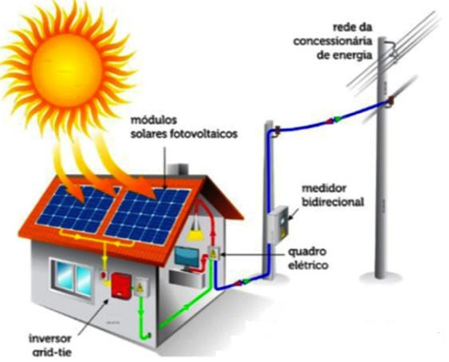
Sistemas Grid-Tie: Geração de fontes Renováveis
Desde 17 de abril de 2012, quando entrou em vigor a Resolução Normativa ANEEL nº 482/2012, o consumidor brasileiro pode gerar sua própria energia elétrica a partir de fontes renováveis e inclusive fornecer o excedente para a rede de distribuição de sua localidade. Trata-se da micro e da minigeração distribuídas de energia elétrica, inovações que podem aliar economia financeira, consciência socioambiental e autossustentabilidade. Veja aqui quantos consumidores já estão operando como micro e minigeradores no Brasil.
Os estímulos à geração distribuída se justificam pelos potenciais benefícios que tal modalidade pode proporcionar ao sistema elétrico. Entre eles, estão o adiamento de investimentos em expansão dos sistemas de transmissão e distribuição, o baixo impacto ambiental, a redução no carregamento das redes, a minimização das perdas e a diversificação da matriz energética
De acordo com a Resolução Normativa nº 482/2012, os microgeradores são aqueles com potência instalada menor ou igual a 100 quilowatts (kW), e os minigeradores, aqueles cujas centrais geradoras possuem de 101 kW a 1 megawatt (MW). As fontes de geração precisam ser renováveis ou com elevada eficiência energética, isto é, com base em energia hidráulica, solar, eólica, biomassa ou cogeração qualificada.
Crédito de energia
A novidade da norma é simplificar a conexão das pequenas centrais à rede das distribuidoras de energia elétrica e permitir que a energia excedente produzida possa ser repassada para a rede, gerando um “crédito de energia” que será posteriormente utilizadopara abater seu consumo. Um exemplo é o da microgeração por fonte solar fotovoltaica: de dia, a “sobra” da energia gerada pela central é passada para a rede; à noite, a rede devolve a energia para a unidade consumidora e supre necessidades adicionais. Portanto, a rede funciona como uma bateria, armazenando o excedente até o momento em que a unidade consumidora necessite de energia proveniente da distribuidora.
O saldo positivo desse crédito de energia não pode ser revertido em dinheiro, mas pode ser utilizado para abater o consumo em outro posto tarifário (ponta/fora ponta), quando aplicável, em outra unidade consumidora (desde que as duas unidades estejam na mesma área de concessão e sejam do mesmo titular) ou na fatura do mês subsequente. Os créditos de energia gerados continuam válidos por 36 meses.
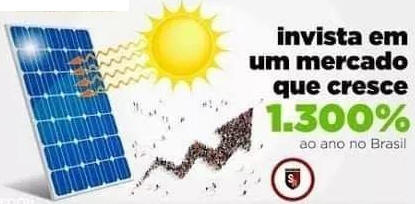
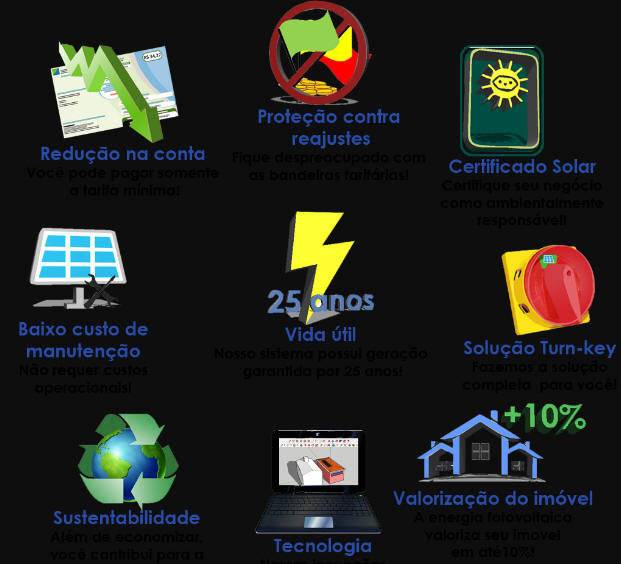
Condições para a adesão
Compete ao consumidor a iniciativa de instalação de micro ou minigeração distribuída – a ANEEL não estabelece o custo dos geradores e tampouco eventuais condições de financiamento. Portanto, o consumidor deve analisar a relação custo/benefício para instalação dos geradores, com base em diversas variáveis: tipo da fonte de energia (painéis solares, turbinas eólicas, geradores a biomassa, etc), tecnologia dos equipamentos, porte da unidade consumidora e da central geradora, localização (rural ou urbana), valor da tarifa à qual a unidade consumidora está submetida, condições de pagamento/financiamento do projeto e existência de outras unidades consumidoras que possam usufruir dos créditos do sistema de compensação de energia elétrica.
Por fim, é importante ressaltar que, para unidades consumidoras conectadas em baixa tensão (grupo B), ainda que a energia injetada na rede seja superior ao consumo, será devido o pagamento referente ao custo de disponibilidade – valor em reais equivalente a 30 kWh (monofásico), 50 kWh (bifásico) ou 100 kWh (trifásico). Em situação análoga, para os consumidores conectados em alta tensão (grupo A), a parcela de energia da fatura será zerada, sendo que a parcela da fatura correspondente à demanda contratada será faturada normalmente.
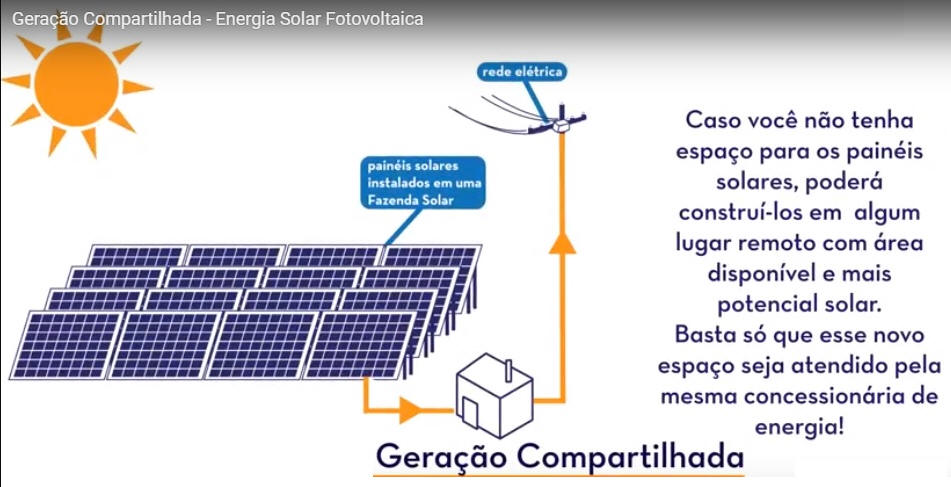